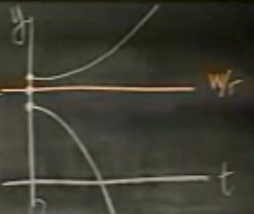

Ders 5
Bu derste özel bir ODE türü göreceğiz, bu ODE'lerde sağ tarafında bağımsız değişken hiç yer almıyor. Bağımsız değişken $dy/dt = ..$ gibi bir formülde $t$ değişkenidir, bahsettiğimiz türde sağ tarafta $t$ içeren bir terim bulunmaz. Genel olarak
$$ \frac{dy}{dt} = f(y) $$
Tabii bu tür bir denklemde değişken ayırma yöntemi kullanmak (bazen, ilk bakışta) kolay. O zaman niye hemen çözmüyoruz? Cevap şu ki çözmemize gerek kalmadan bu tür denklemler hakkında bazı bilgiler edinmek istiyoruz. Hızlı olduğu için, konunun ruhu, özü hakkında bilgi (insight) kazandırdığı için. Bazen değişken ayırma da işlemeyebilir, ya da denklem hakkında çok özel bir soru sormak istiyoruz ve bu soru için çözümle uğraşmak istemeyebiliriz.
Grafiksel olarak düşünelim, öncelikle tüm izoklinler (isoclines), yani eğimi aynı olan parçaların çizimleri düz yataydır. Niye? $dy/dx = f(y)$ türü bir formül her $x$ (ya da $t$) için aynı $y$'yi vermek zorundadır, o zaman her $y$ için (mesela $y_0$ diyelim) eğim (slope), yani $dy/dx$ her yerde aynıdır, yana doğru düzdür. O zaman bir $f(y_o)$ için çizim şuna benzer.
Diğer $y$ değerleriyle

Diğer entegral eğrileri
Bu formüllerde entegral eğrilerinin birisi diğerlerinin yana itilmiş haline benzer, yani entegral eğrileri taşıma sırasında değişmez (invariant under translation) olma özelliğe sahiptirler. Birini çizince hepsini görmüş oluruz, diğerleri paralel şekilde hemen yandadırlar.
Bilgi nasıl elde ederiz? Kritik nokta (critical points) adlı kavramı kullanmamız lazım.
Kritik Noktalar
Bu noktalar diferansiyelin sıfır olduğu $y_0$ noktasıdır yani $f(y_o) = 0$.
Adımlar
1) Kritik noktayı bul
2) $f(y)$'yi grafikle, nerede negatif, nerede pozitif bul. Nerede sıfır olduğunu biliyoruz zaten, onun üstünde ve altında negative ve pozitif olması lazım. Bu niye önemli? Çünkü formül unutmayalım ki $dy/dt = f(y)$. Eger $f(y) > 0$ ise o zaman $dy/dt > 0$ demektir yani $y(t)$ artacaktır.
Örnek
$y$ = bankadaki para
$r$ = sürekli faiz oranı
$$ \frac{dy}{dt} = ry $$
Diyelim ki bankada kötü niyetli bir kişi var, paranızı zimmetine geçiriyor.
$w$ = zimmete geçirme oranı
O zaman
$$ \frac{dy}{dt} = ry - w$$
Formülü çözmek kolay, değişkenleri ayır, entegre et. Fakat biz çözmeden, çözümlerin, $y(t)$'lerin, nasıl davrandığına bakalım. ODE beklediğimiz, bu yazının konusu olan formda (otonom) çünkü sağ tarafta $t$ değişkeni yok. Adımları takip edelim:
1) Kritik noktayı bulalım
$$ ry - w = 0 $$
$$ y = \frac{w}{r} $$
2) Grafikleyelim
Bu grafikte bizim için tek önemli şey, nerede $ry-w$ ekseni üzerinde, nerede onun altında olduğumuz. Çünkü o değerin üzerindeysek $f(y) > 0$, o zaman $y$ artıyor, diğerinde $f(y) < 0$, o zaman $y$ azalıyor. Ortadaki nokta ise $w/r$ noktası.

O zaman $y$ nasıl davranır? Başlangıç noktasına bağlı. Eğer başlangıç noktası $w/r$ üzerinde ise, o zaman bir artmaya başladı mı üstel (exponential) olarak artmaya başlar.

$w/r$ üzerindeki tüm başlangıç noktaları diğerlerinin tercümesi, taşınmış hali (translations), üstte belirttiğimiz gibi.
Lojistik Denklem
Bu denklem nüfus artışını hesaplamak için kullanılır.
Nüfus $y(t)$. Temel denklem
$$ \frac{dy}{dt} = ky$$
$k$ büyüme hızı
$k$ sabit ise büyümeye basit büyüme adı verilir. Lojistik büyüme biraz daha çetrefil bir tür büyümedir. Bu model der ki sabit büyüme şekli fazla temeldir, hiçbir canlı sınırsız bir şekilde büyüyemez, kaynaklar buna müsaede etmez.
Lojistik denkleme göre artma oranı (rate) da zaman göre değişir, nüfus arttıkça oran azalır. Bu azalışı modellemek için en basit form $k = a - by$ gibi bir fonksiyondur. Önceki formülün içine koyarsak
$$ \frac{dy}{dt} = ay - by^2 $$
Bu nihai denklem Lojistik Denklemidir, ve nüfus artışı haricinde pek çok kullanım alanı vardır. Hastalık yayılması, dedikodu (rumor) aktarımı, büyümesi, vs. gibi.
Denklemi çözmek için değişkenler ayrılır, ayrıca kısmı kesirler (partial fractions) adında bir teknik lazımdır. Biz çözümü yapmadan denklem hakkında bilgi edinmeye uğraşacağız.
Kritik noktalar:
$$ 0 = ay - by^2 $$
$$ y(a-by) = 0$$
$$ y = 0, y=a/b $$
İki kritik nokta bulduk. Şimdi eksenleri $y'$ ve $y$ olan bir grafik çizelim. Bu grafikte $y'$ nin pozitif mi negatif mi olduğuna göre $y$'nin azalıp azalmayacağını oklar ile göstereceğiz. Parabolun altında $y'$ negatiftir, $y$ buradalarda artar (ok sağa doğru), diğer yerlerde tam tersi.
Şimdi $y$ ve $t$ grafiği çizelim. Eğer başlangıç noktası $a/b$ altındaysa ve orada artış var ise, ayrıca entegral eğrilerinin hiçbir zaman birbirleriyle çakışamayacağını söylemiştik, o zaman bu artış $a/b$ düz çizgisine gelip dayanacak ama onu geçmeden ona paralel sağa doğru devam edecektir. Her artış birbirinin sağa doğru tercümesidir, çizim bunu tam gösteremiyor ama aşağı yukarı o temsil edilmeye uğraşıldı.
$a/b$ üzerinde benzer ama tersi bir durum, başlangıçtan $a/b$'ye azalış oluyor. $a/b$ noktasına stabil kritik nokta (critical point, hoca c.p. yazdı) ismi veriliyor, $0$ noktası stabil olmayan kritik nokta. Hoca çözüm (solution) kelimesinin üzerini çizdi, ama, tabii ki bu noktaların aynı zamanda birer çözüme de tekabül ettiğini söyledi.
Stabiliteyi anlamak için grafikte kritik noktalara bakılır, oklar eğer o noktadan "kaçıyorsa" o nokta stabil olmayan, o noktaya doğru "gidiyorsa" o nokta stabil nokta demektir.
Üçüncü bir seçenek ise şu. Eğer $y'$ ve $y$ eğrisi alttaki gibiyse ne olur?

Bu durumda başlangıç $y$'sı $a$ altında ise $a$'ya doğru gidilir, üstünde ise ondan kaçılır. Yani stabilite $a$'nin neresinde olduğunuza göre değişir. Bu tür noktalara bu sebeple "yarı stabil (semi-stable)" adı veriliyor.
Şimdi lojistik denklemin değişik bir türüne gelelim.
Hasatla Eksiltilen Lojistik Denklemi
Mesela somon balığı yetiştirilen bir balık çiftliği düşünelim.
Hasat $h$: sabit sayıda alınan balık
Yani nüfusa oranla değil, belli sabit sayıda somonun alınmasından bahsediyoruz. Denklem
$$ \frac{dy}{dt} = ay - by^2 - h $$
Dikkat, $hy$ değil, sadece $h$.
Bunu çözmek için ne yapardık? Yapılmaması gereken onu sıfıra eşitleyip karesel denklem ile boğuşmak, koca bir formülü çözmeye uğraşmak, vs. Daha iyisi, hemen bir grafik çizelim.
Eğer $h=0$ ise, grafik neye benzer? $h$'yi arttırdıkça grafik nasıl değişir (aşağı iner)?

Eğer $h=0$ eğrisini yatay eksene değecek kadar, bir $h_m$ değeri kadar aşağı indirseydik,
$h_m$ için $y$ ve $t$ grafiği şuna benzer.
Yani kırmızı çizgi hem altında hem üstünde iniş vardır. $h_m$ noktasının model açısından şu anlamı vardır: $h_m$ yapılabilecek en fazla hasat oranını gösterir, o orandan fazla yapılacak hasat zamanla somonları tüketecektir. Kırmızı çizgi üstünden başladığımız ve $h_m$ oranından fazla (çok az fazla bile olabilir) bir oranla hasat yaptığımız takdirde, somonlar bitmez.
Yukarı